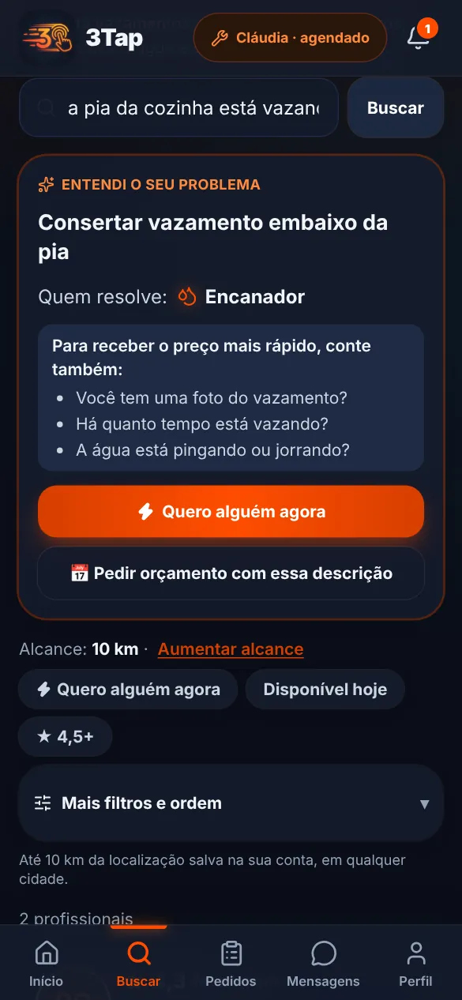
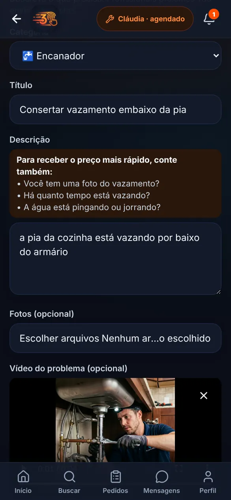
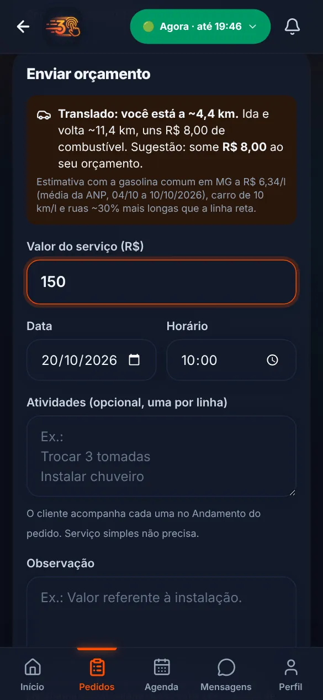

Encontre
Escolha a categoria ou escreva do seu jeito. O 3Tap usa sua localização para mostrar quem atende perto, com nota, distância, disponibilidade e preço.
Encontre profissionais, explique o que aconteceu, receba propostas e acompanhe o serviço em um só lugar. Conversa, contratação e acompanhamento ficam dentro do app, do primeiro contato à conclusão.
Mais de 30 tipos de serviço, de eletricista a cuidador de idosos. Reputação construída só com serviços contratados de verdade. Funciona no navegador do celular e do computador.


Não sabe se é caso de encanador, eletricista ou outro especialista? Escreva o problema do seu jeito na busca. O 3Tap entende a descrição, indica quem resolve e já organiza o pedido para você receber o orçamento.
“A pia da cozinha está vazando por baixo do armário.”
A indicação é uma sugestão para começar: você pode trocar a profissão quando quiser. O 3Tap não faz diagnóstico nem dá preço; quem avalia é o profissional.


Você precisa de um eletricista e não sabe quem atende perto. Pede indicação, manda mensagem, espera resposta e ainda não sabe quanto vai custar. O 3Tap foi feito para encurtar esse caminho.
O 3Tap não faz milagre: ele organiza a contratação para reduzir esses problemas.
Categoria, profissional, CHAMAR. Os detalhes vêm depois, dentro da conversa do pedido.
Escolha a categoria ou escreva do seu jeito. O 3Tap usa sua localização para mostrar quem atende perto, com nota, distância, disponibilidade e preço.
Explique o que precisa com fotos, vídeos e áudios. Se precisar, faça uma chamada de voz ou vídeo pelo app. O profissional envia o preço e você vê tudo antes de aceitar.
Toque em Aceitar e pagar. Você paga o valor combinado por Pix, sem taxa a mais, e o dinheiro fica guardado.
Veja o que já foi feito e o que falta. Serviço extra só entra se você aprovar o preço dentro da conversa.
Confirme a conclusão e o pagamento é liberado ao profissional. Depois, os dois se avaliam. Só avalia quem contratou de verdade.
A avaliação por vídeo é opcional. O perfil de cada profissional mostra as formas de contratar que ele oferece.
Deixar alguém entrar na sua casa pede mais confiança do que comprar um produto. Veja como o 3Tap funciona por dentro.
Só dá para avaliar depois de um serviço contratado e concluído pelo app, nos dois sentidos. O perfil mostra a nota, as avaliações verificadas e os serviços concluídos.
Você paga só o valor combinado. O dinheiro fica guardado e só vai para o profissional quando você confirma a conclusão. Se você não responder no prazo, a liberação é automática.
Algo deu errado? Toque em Reportar problema. O pagamento fica bloqueado até a equipe do 3Tap analisar a conversa e o histórico, e ela pode devolver parte ou todo o valor.
Conversa, fotos, preço aceito, atividades e pagamento ficam no mesmo pedido, com número próprio. É esse histórico que ajuda numa contestação.
Cliente e profissional falam pelo chat e por chamada de voz ou vídeo dentro do app. Ninguém precisa passar o telefone.
Especialidades, preços, região, portfólio e qualificações que o próprio profissional enviou. O 3Tap mostra esses documentos como enviados por ele, sem dizer que foram verificados.
Nem todo serviço precisa de uma visita só para o profissional ver o que está acontecendo. Pela chamada de vídeo do app, você mostra o problema, sem custo, e recebe um preço fechado.
A avaliação por vídeo é grátis para você e não obriga ninguém a fechar o serviço. Ela não substitui uma visita quando o caso exige ver de perto.
Num serviço com várias partes, o profissional divide o trabalho em atividades e marca cada uma quando termina. Você confirma cada atividade ou reporta um problema naquela parte.
Não é só encontrar um profissional. É acompanhar o trabalho até o fim.
2 de 4 atividades concluídas
O 3Tap leva até você clientes da sua região que precisam de alguém agora, hoje ou numa data marcada. Apresente seu trabalho, receba pedidos já organizados e construa seu histórico na plataforma.
"Sua reputação é seu maior ativo."

Toque num serviço para ver quem atende perto de você.
O botão de cada profissional segue a disponibilidade que ele informou. E todo serviço também pode ser agendado.
O profissional disse que pode sair agora. Você chama e ele recebe o alerta na hora.
⚡ CHAMARAinda tem horário hoje. Você escolhe o melhor para você.
AGENDAR PARA HOJEVeja os dias e horários livres na agenda e solicite o agendamento.
VER AGENDADisponibilidade é o que o profissional informou. O serviço só está garantido quando ele aceita o seu chamado.
O 3Tap parte da sua localização, em qualquer cidade. Comece procurando perto e aumente o alcance quando quiser mais opções.
Alguns dos recursos que chegaram nos últimos dias.
Descreva o problema com suas palavras e o app indica a profissão e organiza o pedido.
Grave até 30 segundos ao pedir orçamento: o profissional vê antes de mandar o preço.
Chamadas de voz e vídeo dentro da conversa, sem trocar número de telefone.
Não achou sua resposta? Abra o app e fale com a gente pelo seu perfil.
Não. Criar conta é grátis, e o cliente paga só o valor combinado com o profissional, sem taxa a mais. A taxa da plataforma é descontada do valor que o profissional recebe, e ele vê essa taxa antes de enviar o preço.
Você aceita o preço e paga pelo app, por Pix. O dinheiro fica guardado até você confirmar que o serviço foi concluído. Então ele é liberado para o profissional. Se você não responder no prazo, a liberação é automática. Avaliar é opcional e não segura o pagamento.
Toque em Reportar problema no pedido. O pagamento fica bloqueado até a equipe do 3Tap analisar a conversa e o histórico. A equipe pode liberar o valor, devolver tudo ou devolver uma parte.
Antes de pagar, você pode cancelar a contratação no próprio pedido, sem custo. Depois do pagamento, se algo não sair como combinado, use Reportar problema para a equipe analisar e decidir sobre a devolução.
Veja a nota, as avaliações verificadas (só de quem contratou e pagou pelo app), os serviços concluídos e o portfólio. Documentos e qualificações aparecem como enviados pelo próprio profissional: o 3Tap não os apresenta como verificados.
Sim. O chat do pedido aceita texto, foto, vídeo, áudio, localização e arquivos, com a câmera direto na conversa. Também dá para fazer chamada de voz ou vídeo pelo app.
Escreva o que aconteceu na busca, do seu jeito, como “a luz da sala caiu e o disjuntor desarma”. O 3Tap indica a profissão, monta o título do pedido e sugere o que contar para o preço sair mais rápido. Você pode trocar a profissão se preferir.
Não. Cliente e profissional conversam pelo chat e pelas chamadas do próprio 3Tap, e o número de ninguém aparece.
Sim. Abra o perfil ou a conversa com ele e faça um novo pedido. Os pedidos anteriores com a mesma pessoa continuam no histórico.
Crie sua conta, escolha Trabalhar e cadastre seus serviços, preços, região de atendimento e disponibilidade. Pronto: você já aparece para clientes perto de você. Se já tem conta como cliente, é só ativar o modo profissional no Perfil.

Encontre, converse, contrate e acompanhe tudo num lugar só.
É profissional e quer receber chamados?
Quero oferecer meus serviços3Tap · Clicou, chegou.